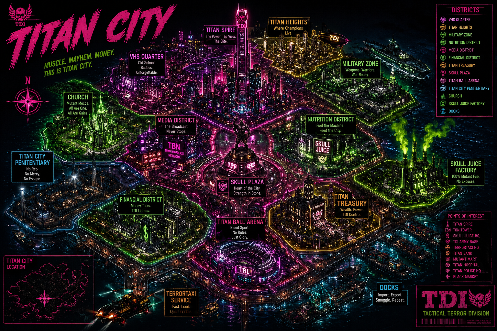

Tactical Terror Division City Network
🗺️ Titan City Map
Interactive District Database
Select an active district marker to access local files, businesses, citizens, incidents and classified intelligence.
Map Network Online
14 District Files Detected

TITAN SPIRE FILE PENDING VHS QUARTER FILE PENDING TITAN HEIGHTS FILE PENDING MILITARY ZONE RESTRICTED FILE NUTRITION DISTRICT FILE AVAILABLE SKULL JUICE FACTORY MUTAGEN WARNING MEDIA DISTRICT FILE PENDING SKULL PLAZA FILE AVAILABLE TITAN CITY CHURCH FILE PENDING TITAN CITY PENITENTIARY MAXIMUM SECURITY FINANCIAL DISTRICT FILE PENDING TITAN TREASURY SECURITY ACTIVE TITAN BALL ARENA FILE PENDING TITAN CITY DOCKS FILE PENDING
MAP COMMAND:
Bright green and pink markers are active.
Dim markers represent district files awaiting deployment.
DISTRICT DATABASE // CITYWIDE
🏙️ District Files
🥤
Nutrition District
FILE ONLINE
💀
Skull Plaza
FILE ONLINE
📼
VHS Quarter
FILE PENDING
🏙️
Titan Heights
FILE PENDING
🗼
Titan Spire
FILE PENDING
🪖
Military Zone
RESTRICTED
📡
Media District
FILE PENDING
💵
Financial District
FILE PENDING
🏦
Titan Treasury
SECURITY ACTIVE
🏟️
Titan Ball Arena
FILE PENDING
⛪
Titan City Church
FILE PENDING
⛓️
Penitentiary
MAXIMUM SECURITY
🏭
Skull Juice Factory
MUTAGEN WARNING
⚓
Titan City Docks
FILE PENDING